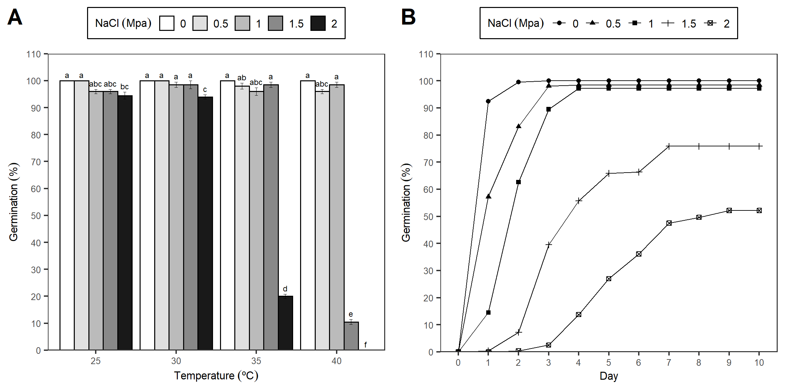
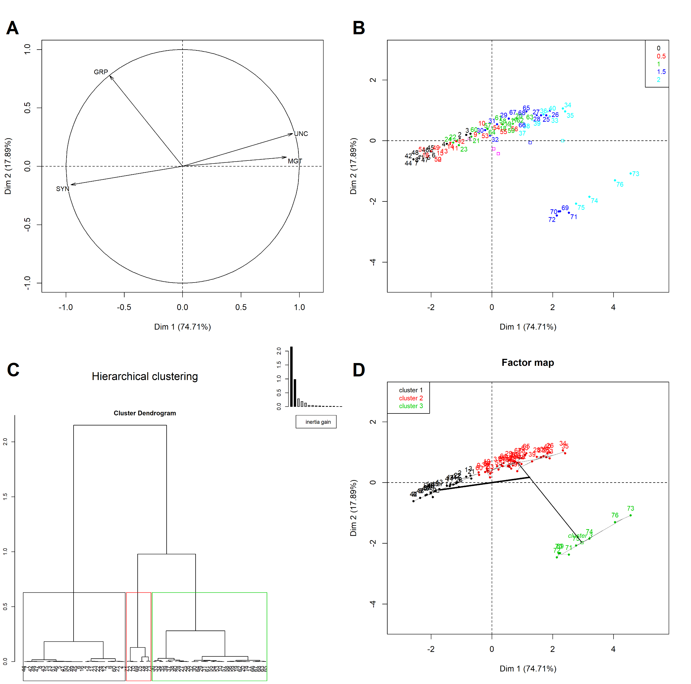

6 Acknowledgments
Donec lacus nunc, viverra nec, blandit vel, egestas et, augue. Vestibulum tincidunt malesuada tellus. Ut ultrices ultrices enim. Curabitur sit amet mauris. Morbi in dui quis est pulvinar ullamcorper. Nulla facilisi. Integer lacinia sollicitudin massa. Cras metus. Sed aliquet risus a tortor. Integer id quam. Morbi mi.
| Function | Description |
|---|---|
| ger_summary | Calculate ten germination indices maintaining the factors levels for analysis of variance |
| ger_intime | Calculates and displays cumulative germination data. |
| fplot | Function that allows to graphic the results in bar or line plot. |
| GerminaQuant | Runs the interactive application in offline mode for use on a personal computer. |
| prosopis | Dataset with germination experiment in Prosopis juliflor seeds under under different osmotic potentials and temperatures. |

Figure 6.1: Germination experiment with Prosopis juliflor under different osmotic potentials and temperatures. A) Bar graph with germination percentage in a factorial analisys. B) Line graph from cumulative germination under different osmotic potentials.

Figure 6.2: Plant of Jatropha curcas. A) Foliage, B) Leaf, C) Fruit.

Figure 6.3: Multivariate Analysis: Principal component Analysis and Hierarchical Clustering Analysis.